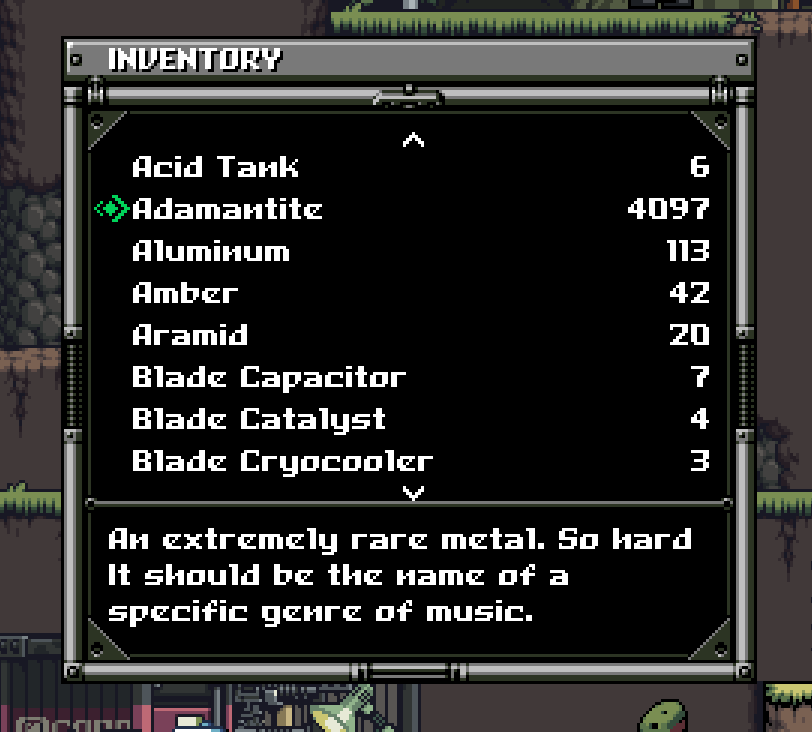

2022-11-24
I've been playing through Mercenary Kings recently and while fun, the last few cheevos requires you to find a lot of materials for crafting.
To speed up the process I went to check if i could edit the save file and add lots of materials, as you do.
I opened up the save file in a hex editor and couldn't really make out any of the data in it. I gathered some material and compared the old save file with the new file... it looked like a completely different garbled mess! Did they encrypt the save files?!
Instead of accepting loss and farming materials, I decided to try to decompile the game for leads on how to decrypt the save files, naturally.
My first approach was to open the game executable in Ghidra, a reverse engineering tool, and it got stuck on loading the file.
A quick google search for the error message I received revealed that Ghidra was not the right tool for this job - I had a .NET executable on my hands!
I might get back to Ghidra in a later article, but for now we have to look for another tool.
My knowledge of XNA / .NET / C# is not so good, so excuse me for any mixed up terminology I might use, haha. In any case, what I wanted was in fact a .NET decompiler, so I downloaded and ran dotPeek. I didn't really know what the output would look like, but I figured it might be easier to read than whatever Ghidra produces and...
Well! What is it?
...and... everything is just... there! All the code of the game: functions, variables, all the bells and whistles, it's all there with original names and everything. Suddenly this venture, which seemed somewhat futile, felt incredibly doable.
In just a matter of minutes I found the save encrypt/decrypt functions. I quickly whipped up a small C# program to accept a file to encrypt or decrypt. I could nearly use the game functions as-is; the only real change I had to make was to set the padding mode of the encryption to none. Could the default padding mode have changed since the game was released, perhaps?
Decrypted data.
From there it was just a matter of mapping out what data was where in the file. Once again, having the source code for the save file writer made this a much simpler process. I found the item order in ItemType.cs, which has all the item types in a list.
As an example, let's add some extra Adamantite.
ItemType.cs
So... Adamantite is item 14. Each item is 6 bytes long and, in my case, the item list started at byte 140. 140 + 14 * 6 = 224, or 0xE0 in hex.
Let's just add a liiittle bit extra...
Fire up the game and...
...tadah! You can even give yourself other kinds of items like gun parts, knives and ornaments to name a few. Lots of money and materials will do for me, though!